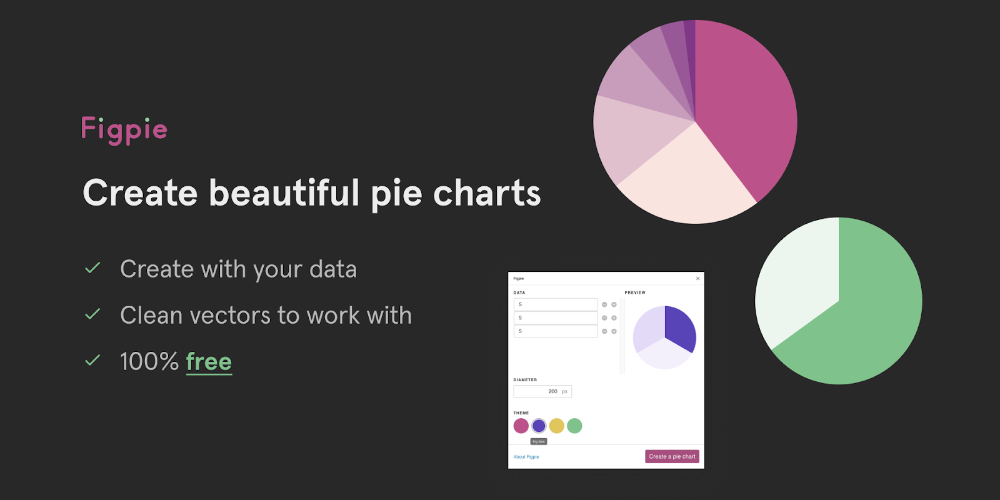
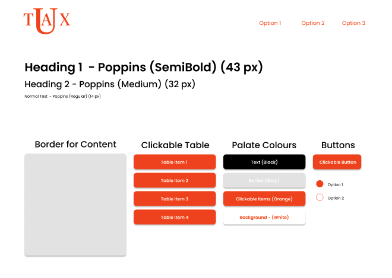

uTax
A place where U can learn to do your taxes
Initial Steps
From our initial understanding of the project and our ambition with it, there have been several layers of down-scoping. Initial ideas revolved around creating a platform with several use cases and features like AI generated suggestions for individuals, connections with tax consultants, a forum on site etc. Recognizing the complexity of the features and the need for a deep focus on one or two feature sets allowed us to narrow down to our current prototype. It is focused on having a centralized database for users' tax documents and provides general-customized feedback based on only two user types: small business and self-employed. It also has a basic recommendation and dates page which helps users keep track of important deliverables. These changes have also helped us build better design and not fall too deep into the technicalities of tax documents and law. We tested our paper prototype with two users, one with a small business (CrepeBerry) owner and the other with a YouTuber. Notes from each are as follows:
CrepeBerry
- More information at the start-up page (explained them the idea behind uTax but they had trouble navigating the page because they felt pushed to sign up) - maybe not our goal
- uTax - thought it was the university of Tax - liked the idea that it is college related and not just another company
- Likes that information not be taken - maybe adding something below the username section saying we encourage you to not use your real name
- Likes the idea of having emails being sent
- FAQ question suggestions?
- What kind of help do we provide? - What happens with the data? - Is it free? - Don’t tax laws change often - how can I trust the content here is true?
Youtuber
- Navigation was clear but had hard time understanding value prop. Are we just providing info? Is there more?
- Unclear how and where to input tax info, need a page that connects tax input with our calcs and advice
- Do we have a way to connect individual with prof advisors through web page or a data set people can access to look at other people/orgs that can help navigate taxes
- General design and outline made sense
- Wanted to know what the exact tax info we were providing, was it just around laws and dates, or are we giving advice around how to maximize returns etc too?
Key Takeaways
- Improve landing page to have more information, make clear what the product provides
- Continue building our product with privacy in mind
- Create a distinct dashboard, a one stop page, where most relevant information can be found
- Follow general design principles to create an easy method to upload documents
- Continue building a cohesive aesthetic for the product around the idea of “University” and “Learning”
Overall, we had no trade offs in bringing the prototype online. This is due to the fact that when we created our prototype on paper, we did it keeping in mind that the product itself was eventually going to be a website, meaning that we designed it for that purpose. The only trade offs we can think of is when we used stock images and general google images for some graphics instead of making them because making the images themselves was a lot of extra work that brought little to the table. In this same vein, we had very little changes of what we originally expected to what we got, with the main one being the division between the unpaid and paid versions of the site, which didn’t really translate into the prototype.
Figma Prototype
As for our online protoype, it can be found here on a Figma Board
Heurisitc Evaluation
Feedback
From this phase, we learned the importance of framing a project concept through the eyes of someone who wants to know the interactivity of the app.
In our original concept, we had a rough sketchout of what information would be included. However, our evaluators suggested that instead of having
placeholder information when viewing the statistics page, such as seen below, they suggested that we include statistics of what a real user would
look like with all the views available.

They wanted to know what the app would look like if this idea were to come to fruition, and many design points could have been more fleshed out
(such as how user input will be taken) if we fleshed out the app in the view of a user.
We are at the stage of refining our design coming out of the Heurstical Evaluation stage. Our evaluators liked our idea and general execution of it
such as our color palette and layout. With our focus now on designing our interface to reflect what a real user would look at instead of having placeholder
text: we need to figure out how we are collecting data and the views accompanying it. Up to now, we had our collecting data be “user uploads documents”, but
haven’t thought about the logistics of uploading data. Our idea is to have a upload and have data fill out fields automatically and have users put in any
holes in the data.
In addition, we have to explore more of Figma’s features to support statistical analysis or at least figure out how to appear as if statistical analysis was
accomplished on the app. Alex told us that there was something called Figpie, as seen below, that could help accomplish the income and expenses distribution
on the home page.

Conclusions
The main feedback we got was based on the aesthetics and having an uniform styling guide behind our decision decisions. We worked on the Figma framework as a
team and made the decisions for content through discussions, however we created and placed the items on our own screens. This meant there were differences in
font sizes and types of weights we were using for lines. This is why one of the main things we have done in response to the feedback given to us was to design
a template to guide our styling decisions from now. We worked on this as a team and now it gives us the ability to work on different features individually.
This guide will also give us a means to have features that carry on through pages being placed at the same location. This will help with user mapping as
they will be able to navigate the page faster.
The feedback we got also asked for more content being shown for a hypothetical company. We value this feedback and will be working on designing a flow which
allows people to walk through a scenario for small businesses. We received feedback about our log out button too. The language used for double checking if
the user wants to log out can be confusing as we use words such as “continue” and don’t have it associated with “yes”. We have decided to take the feature
out completely as the folks who gave us feedback said that the feature is not necessary and is not something that many other websites do.

Heuristic Evaluation Received
Here you can find the evaluation of our online prototype conducted by another team in our studio, Little Trees. This evaluation was conducted under the Nieslon's Heurisitc Principles